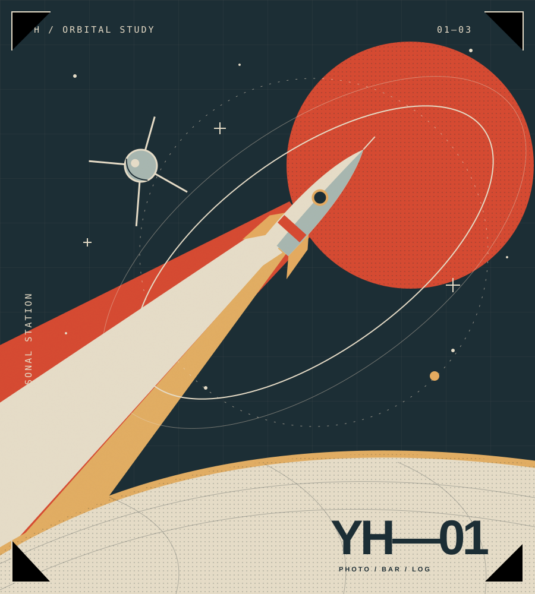
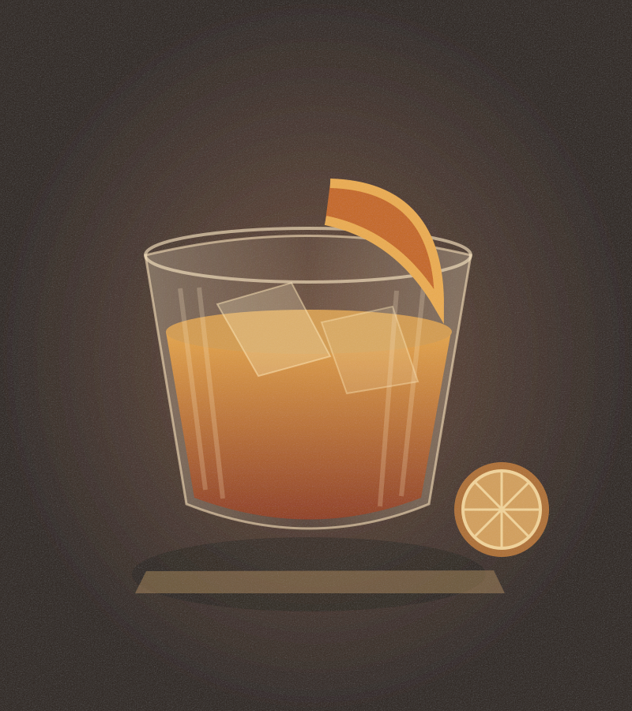

01 / PHOTO ARCHIVE
摄影
01
[地点 · 日期]海岸
02
[地点 · 日期]城市

01调酒记录
[酒名] / [基酒] / [配比]
[香气] / [口感] / [评分]
02待尝试
[酒款或配方]
03 / LOGBOOK
随记
[日期]
[标题]
[记录内容]
YH.
01 / PHOTO ARCHIVE

[酒名] / [基酒] / [配比]
[香气] / [口感] / [评分]
[酒款或配方]
03 / LOGBOOK
[记录内容]
YH.